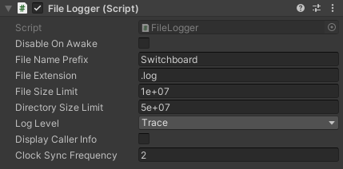
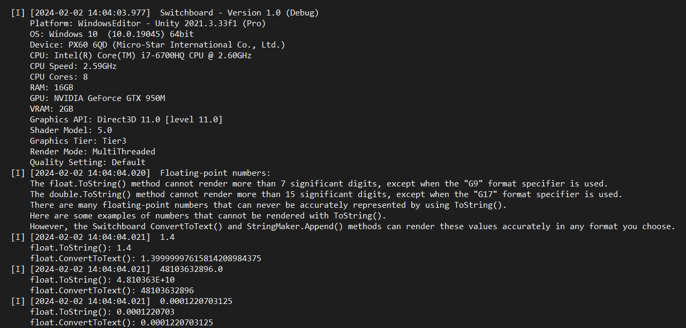

Core Logger
Switchboard includes a logging framework that writes persistent log files to disk, on any hardware platform, with minimal performance impact. With Switchboard you can record log files without allocating a single byte of memory for garbage collection. Most of the logger module is in the Core library, which has no dependencies on Unity. Switchboard's ILogger interface and LogFileWriter can be used in any C# application.
Switchboard implements an ILogger interface that is meant to be essentially interchangeable with the standard .NET ILogger interface. The main implementation of the ILogger interface is the LoggerRoot, which maintains an array of other ILogger implementations, and calls the appropriate log method on each one. These are referred to as log targets, but they have no special definition because they are just other ILogger implementations. Typically, the main ILogger instance that gets injected is a LoggerRoot with a LogFileWriter, and potentially other log targets. Custom log targets can be added to the LoggerRoot, so that logs are sent to multiple targets.
Setting the LogLevel on an ILogger implementation, like the LoggerRoot or LogFileWriter, restricts which log entries are recorded. If a log entry's LogLevel is lower than the target, then it is not recorded.
Log formatting can be customized by implementing the ILogFormatter interface. The LogFileWriter will use the implementation that you pass to its constructor for each new log entry, before it's added to the queue. Custom formatting can be applied based on the log level, the file path, line number, and method that logged the entry, or any other data available to your custom formatter. If LogFileWriter.DisplayCallerInfo is true, the Format method with caller information will be called, instead of the basic Format method. Append the desired log output to the empty StringMakerHandle result, and it will be written to the log file.
One caveat of the LogFileWriter is that it's designed for a loop based system, as is the case in game development. When a log entry is sent to the LogFileWriter, it is formatted and added to a queue of entries that will be flushed to disk later. This design decouples the log call from the more costly process of opening a FileStream and flushing the appropriate bytes to the disk. Therefore, LogFileWriter.FlushLogs() must be invoked periodically. In Switchboard's standard use case, this method is called at the end of each frame. In your application, you may call this method wherever it seems most appropriate. However, if logs are not flushed regularly, it becomes possible for many logs to build up in the queue, which could cause flushing to take longer.
Opening the FileStream is a costly operation. By default, Switchboard opens the FileStream and keeps it open for the duration of the application. The LogFileWriter OpenNewFile() or Open() methods will open the FileStream, creating a new file if necessary, and keep it open until Close() is called. Flushing logs will also open the FileStream if it is not already open.
Unity Logger
Switchboard includes an ILogger implementation that writes to Unity's default logger. When you use the ILogger interface provided by the BasicInjector, log entries are sent to SwitchboardLogger.Root. SwitchboardLogger.Root is the static LoggerRoot in Unity. It has the UnityLogger target assigned by default, which sends log entries to Unity's default logger. So, ILogger log entries will still be sent to the default Console logs. The BasicInjector disables the UnityLogger in built applications, outside of the Unity editor, if a Switchboard log file is created.
Unity also has an ILogger interface, but it is mostly unused by anyone for anything. So, when using Switchboard.ILogger and UnityEngine, you will have to define the following alias with your using statements: using ILogger = Switchboard.ILogger. That will make it clear that ILogger refers to the Switchboard.ILogger interface.
The SwitchboardLogger can override the default UnityLogHandler with a UnityLogHijacker that routes Debug.Log calls to the SwitchboardLogger.Root instead. The LoggerRoot still sends the hijacked Debug.Log calls to the UnityLogger, but they can also be sent to any other log target as well, like the LogFileWriter and your own custom log targets. So, even Debug.Log calls get routed to Switchboard log files. The static SwitchboardLogger has helper methods for hijacking or restoring the default UnityLogHandler for Debug.Log calls, and for disabling or enabling the UnityLogger target on the Root logger.
The FileLogger component simplifies LogFileWriter operations in Unity. When a FileLogger component is created, it will disable itself on Awake by default. That allows you to create a FileLogger from script and configure its properties before enabling it. When the FileLogger is enabled it will attempt to open a log file. If it fails to open a log file, it will automatically disable. An enabled FileLogger has an open log file on disk. It implements the ILogger interface, so accessing it as an ILogger reference gives you all of the expected functionality. It can be assigned to the Root logger as a target, or referenced directly if you prefer.
Configuration
Here is how the BasicInjector enables log files.
using System;
using UnityEngine;
namespace Switchboard
{
[CreateAssetMenu(fileName = nameof(BasicInjector), menuName = "Switchboard/Basic Injector", order = SwitchboardMenuOrder.Value)]
public class BasicInjector : DependencyInjector
{
[Tooltip("Sets the log level at activation.")]
public LogLevel LogLevel;
[Tooltip("Sets whether the log should display caller info.")]
public bool DisplayCallerInfo;
[Tooltip("Gets or sets the hardware platforms where log files will be enabled.")]
public PlatformFlags LogFilePlatforms = (PlatformFlags)532680447;
protected override void Activation()
{
// Configure Switchboard logger.
SwitchboardLogger.Root.LogLevel = LogLevel;
UnityLogger.Default.DisplayCallerInfo = DisplayCallerInfo;
// Activate log files.
if(LogFilePlatforms.HasFlag(ApplicationPlatform.Flag))
{
GameObject logFileObject = new GameObject(nameof(FileLogger));
DontDestroyOnLoad(logFileObject);
logFileObject.hideFlags = HideFlags.HideInHierarchy;
// Configure log files.
FileLogger logFiles = logFileObject.AddComponent<FileLogger>();
// Default Values:
//logFiles.Directory = Application.persistentDataPath;
//logFiles.FileNamePrefix = Application.productName.Replace(" ", "");
//logFiles.FileExtension = LogFileWriter.DefaultFileExtension;
//logFiles.FileSizeLimit = LogFileWriter.DefaultFileSizeLimit;
//logFiles.DirectorySizeLimit = FileLogger.DefaultDirectorySizeLimit;
//logFiles.Formatter = StandardLogFormatter.Default;
logFiles.LogLevel = LogLevel;
logFiles.DisplayCallerInfo = DisplayCallerInfo;
logFiles.enabled = true;
if(logFiles.enabled)
{
// Add log files to the root logger.
SwitchboardLogger.Root.Add(logFiles);
logFiles.Destroyed += static (ILogger logger) => SwitchboardLogger.Root.Remove(logger);
// Send Debug.Log calls to the root logger, not directly to Unity's default logger.
// The root logger still sends the messages to Unity's default logger, but they pass through the root first.
SwitchboardLogger.HijackDebugLogHandler();
if(!Application.isEditor)
{
// Remove Unity's default logger from the root logger, disabling Unity's log files outside of the editor.
SwitchboardLogger.RemoveDefaultUnityLogger();
logFiles.Destroyed += static (ILogger logger) => SwitchboardLogger.AddDefaultUnityLogger();
}
// Add hardware platform information directly to the log file.
logFiles.LogInformation(PlatformStatLog.GetStatLog());
}
else
Destroy(logFileObject);
}
}
protected override void Deactivation()
{
// Send Debug.Log calls directly to Unity's default logger.
SwitchboardLogger.RestoreDebugLogHandler();
}
public override T Get<T>()
{
Type type = typeof(T);
if(type == typeof(ILogger))
return SwitchboardLogger.Root as T;
return null;
}
}
}
FileLogger
Here is the FileLogger, showing how a LogFileWriter is used.

using System;
using System.Runtime.CompilerServices;
using UnityEngine;
namespace Switchboard
{
// Provides a helpful utility for using LogFileWriter objects in Unity.
[DefaultExecutionOrder(31999)]
public sealed class FileLogger : MonoBehaviour, ILogger
{
private LogFileWriter LogFileWriter;
public string Path => LogFileWriter?.Path;
[Tooltip("The component will automatically disable on Awake if this is true. Allows components created in script to set properties before enabling.")]
[SerializeField] private bool DisableOnAwake = true;
// The directory where log files will be created. Setting a new value disables the component.
public string Directory { get => _Directory; set { _Directory = value; enabled = false; } }
private string _Directory;
[Tooltip("Log file names begin with this, but a timestamp will be added to ensure file names are different. Setting a new value disables the component.")]
public string FileNamePrefix { get => _FileNamePrefix; set { _FileNamePrefix = value; enabled = false; } }
[SerializeField][Delayed] private string _FileNamePrefix;
[Tooltip("The file extension applied to the file name. Setting a new value disables the component.")]
public string FileExtension { get => _FileExtension; set { _FileExtension = value; enabled = false; } }
[SerializeField][Delayed] private string _FileExtension = LogFileWriter.DefaultFileExtension;
[Tooltip("The maximum size of log files, in bytes. When a log file reaches the size limit a new file will be created.")]
public int FileSizeLimit { get => _FileSizeLimit; set { if(LogFileWriter != null) LogFileWriter.FileSizeLimit = value; _FileSizeLimit = value; } }
[SerializeField][Delayed][Min(LogFileWriter.MaxBytesPerLog)] private int _FileSizeLimit = LogFileWriter.DefaultFileSizeLimit;
[Tooltip("The total number of bytes allowed for all log files in the log directory from this source. The newest file will not be removed.")]
public int DirectorySizeLimit { get => _DirectorySizeLimit; set => _DirectorySizeLimit = value; }
[SerializeField][Delayed] private int _DirectorySizeLimit = DefaultDirectorySizeLimit;
public const int DefaultDirectorySizeLimit = 50_000_000;
[Tooltip("The minimum log level for a log entry to be written.")]
public LogLevel LogLevel { get => _LogLevel; set { if(LogFileWriter != null) LogFileWriter.LogLevel = value; _LogLevel = value; } }
[SerializeField] private LogLevel _LogLevel;
[Tooltip("Whether information about the caller of a log method should be displayed.")]
public bool DisplayCallerInfo { get => _DisplayCallerInfo; set { if(LogFileWriter != null) LogFileWriter.DisplayCallerInfo = value; _DisplayCallerInfo = value; } }
[SerializeField] private bool _DisplayCallerInfo;
[Tooltip("How often to synchronize with the system clock, in seconds. This affects the time stamps in the standard log formatter.")]
public float ClockSyncFrequency { get => _ClockSyncFrequency; set => _ClockSyncFrequency = value; }
[SerializeField][Delayed][Min(0.0f)] private float _ClockSyncFrequency = DefaultClockSyncFrequency;
public const float DefaultClockSyncFrequency = 2.0f;
private float ClockSyncTimer;
// The formatter to use for formatting log entries.
public ILogFormatter Formatter { get => _Formatter; set { if(LogFileWriter != null) LogFileWriter.Formatter = value; _Formatter = value; } }
private ILogFormatter _Formatter = StandardLogFormatter.Default;
public event Action<ILogger> Destroyed;
public void Log(LogLevel logLevel, ReadOnlySpan<char> message, [CallerMemberName] string memberName = null, [CallerFilePath] string filePath = null, [CallerLineNumber] int lineNumber = 0)
{
LogFileWriter?.Log(logLevel, message, memberName, filePath, lineNumber);
}
public void Log(LogLevel logLevel, Exception exception, ReadOnlySpan<char> message)
{
LogFileWriter?.Log(logLevel, exception, message);
}
private void OnValidate()
{
InitializePathProperties();
}
private void Awake()
{
InitializePathProperties();
if(DisableOnAwake)
enabled = false;
}
private void InitializePathProperties()
{
if(string.IsNullOrEmpty(_Directory))
_Directory = Application.persistentDataPath;
if(string.IsNullOrEmpty(_FileNamePrefix))
_FileNamePrefix = Application.productName.Replace(" ", "");
}
private void OnEnable()
{
// Setting LogFileWriter.FileSizeLimit can throw an exception if the value is set too low, below LogFileWriter.MaxBytesPerLog.
FileSizeLimit = Math.Max(FileSizeLimit, LogFileWriter.MaxBytesPerLog);
// If the path has changed, flush any remaining log entries, then close the file. Set the LogFileWriter null so we can make a new one.
if(LogFileWriter != null)
{
bool pathChanged = LogFileWriter.Directory != Directory;
pathChanged |= LogFileWriter.FileNamePrefix != FileNamePrefix;
pathChanged |= LogFileWriter.FileExtension != FileExtension;
if(pathChanged)
{
FlushAndCloseLogFile();
LogFileWriter = null;
}
}
// Create a new LogFileWriter object. If it succeeds, the path arguments contain valid characters. Disable on failure.
if(LogFileWriter == null)
{
try
{
LogFileWriter = new LogFileWriter(Directory, FileNamePrefix, FileExtension, FileSizeLimit, Formatter);
LogFileWriter.FileClosed += RemoveExcessLogFiles;
}
catch(Exception exception)
{
Debug.LogException(exception);
enabled = false;
}
}
// Ensure the LogFileWriter has the latest properties. Try to open the file. Disable on failure.
if(LogFileWriter != null)
{
LogFileWriter.LogLevel = LogLevel;
LogFileWriter.DisplayCallerInfo = DisplayCallerInfo;
LogFileWriter.Formatter = Formatter;
try
{
LogFileWriter.FileSizeLimit = FileSizeLimit;
LogFileWriter.Open();
}
catch(Exception exception)
{
Debug.LogException(exception);
enabled = false;
}
}
}
private void Update()
{
FileSizeLimit = Math.Max(FileSizeLimit, LogFileWriter.MaxBytesPerLog);
// Synchronize the PreciseClock used by the StandardLogFormatter for timestamps with the system clock.
ClockSyncTimer += Time.unscaledDeltaTime;
ClockSyncFrequency = Math.Max(ClockSyncFrequency, 0.0f);
if(ClockSyncTimer < -ClockSyncFrequency)
ClockSyncTimer = 0.0f;
if(ClockSyncTimer >= ClockSyncFrequency)
{
PreciseClock.SynchronizeWithSystemClock();
ClockSyncTimer -= ClockSyncFrequency;
if(ClockSyncTimer >= ClockSyncFrequency)
ClockSyncTimer = 0.0f;
}
// Ensure that the LogFileWriter has the latest property values. Disable if the path has changed.
if(LogFileWriter != null)
{
bool pathChanged = LogFileWriter.Directory != Directory;
pathChanged |= LogFileWriter.FileNamePrefix != FileNamePrefix;
pathChanged |= LogFileWriter.FileExtension != FileExtension;
if(!pathChanged)
{
LogFileWriter.LogLevel = LogLevel;
LogFileWriter.DisplayCallerInfo = DisplayCallerInfo;
LogFileWriter.Formatter = Formatter;
LogFileWriter.FileSizeLimit = FileSizeLimit;
}
else
enabled = false;
}
}
private void LateUpdate()
{
FlushLogs();
}
public void FlushLogs()
{
LogFileWriter?.FlushLogs();
}
private void OnDisable()
{
FlushAndCloseLogFile();
}
private void FlushAndCloseLogFile()
{
if(LogFileWriter != null)
{
try
{
LogFileWriter.FlushLogs();
}
catch(Exception exception)
{
Debug.LogException(exception);
}
try
{
LogFileWriter.Close();
}
catch(Exception exception)
{
Debug.LogException(exception);
}
}
}
private void OnDestroy()
{
LogFileWriter = null;
Destroyed?.Invoke(this);
}
public void RemoveExcessLogFiles()
{
RemoveLogFilesBeyondLimit(LogFileWriter, DirectorySizeLimit);
}
public void RemoveLogFilesBeyondLimit(int byteLimit)
{
RemoveLogFilesBeyondLimit(LogFileWriter, byteLimit);
}
private void RemoveExcessLogFiles(LogFileWriter logFileWriter)
{
RemoveLogFilesBeyondLimit(logFileWriter, DirectorySizeLimit);
}
private void RemoveLogFilesBeyondLimit(LogFileWriter logFileWriter, int byteLimit)
{
if(logFileWriter != null)
{
try
{
FileRemover.RemoveFilesBeyondLimit(byteLimit, logFileWriter.Directory, logFileWriter.FileNamePrefix, logFileWriter.FileExtension, true);
}
catch(Exception exception)
{
Debug.LogException(exception);
}
}
}
}
}
Example Logs
Here is an example log file, which allocates no memory for garbage collection, and performs much faster than Unity's default logs methods.
